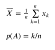

Описание: GNU Octave — свободная программная система для математических вычислений, использующая совместимый с MATLAB язык высокого уровня.
Квадрат горизонтальными линиями разделен на 4 одинаковые полосы. В каждую из них бросается точка, положение которой равновозможно в любом месте полосы. Затем квадрат разделяется вертикальными линиями на 4 одинаковые полосы. Используя метод статистических испытаний, оценить вероятность того, что в каждой вертикальной полосе будет только по одной точке.
Квадрат горизонтальными линиями разделен на 4 одинаковые полосы. В каждую из них бросается точка, положение которой равновозможно в любом месте полосы. Затем квадрат разделяется вертикальными линиями на 4 одинаковые полосы. Используя метод статистических испытаний, оценить вероятность того, что в каждой вертикальной полосе будет только по одной точке.

import matplotlib.pyplot as plt
import random
def roll_dice():
# horizontal_stripes
a = random.randint(1, 4)
b = random.randint(1, 4)
c = random.randint(1, 4)
d = random.randint(1, 4)
if (a == b or a == c or a == d or b == c or b == d or c == d):
vertical_stripes_only_one_point = False
else:
vertical_stripes_only_one_point = True
return vertical_stripes_only_one_point
num_simulations = 10000
num_wins = 0
for i in range(num_simulations):
same = roll_dice()
if same:
num_wins += 1
overall_win_probability = num_wins/num_simulations
print("Average win probability after " + str(num_simulations) + " runs: " + str(overall_win_probability))
Average win probability after 10000 runs: 0.0932